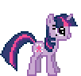
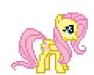
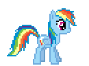
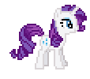
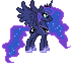
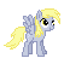

Герои Эквестрии
В этом разделе представлена полная информация о защитниках Понивилля. Каждая пони обладает уникальным набором характеристик, которые определяют её роль на поле боя. Магия дружбы позволяет им объединять усилия: пока одни сдерживают натиск в ближнем бою, другие оказывают поддержку с воздуха или используют дистанционные заклинания.
Важно помнить, что баланс сил — залог успешной обороны. Не стоит полагаться только на одного персонажа. Комбинируйте замедляющие способности Флаттершай с мощными ударами Эппл Джек и не забывайте про мобильность Радуги Дэш. Ниже вы найдете подробное описание каждой доступной героини.

Пинки Пай (Веселая атака)
Пинки — специалист по ближнему бою. Она наносит урон всем врагам в небольшом радиусе вокруг себя. Её атаки очень быстрые, что позволяет эффективно расправляться с группами слабых противников на поворотах тропинки.

Эппл Джек (Сила фермы)
Надежная и сильная, Эппл Джек наносит сокрушительные удары ближайшему врагу. У неё самый высокий показатель урона в секунду среди базовых башен, что делает её идеальным выбором для уничтожения крепких одиночных целей.

Твайлайт Спаркл (Магия дружбы)
Твайлайт использует свои магические способности для фокусированной атаки по цели. Её луч наносит стабильный урон на средней дистанции. Она универсальный боец, который полезен на любом этапе игры.

Флаттершай (Добрый взгляд)
Флаттершай не наносит урона врагам, потому что она слишком добра. Однако её пристальный взгляд заставляет противников сильно замедляться. Это дает другим пони гораздо больше времени, чтобы атаковать неприятеля.

Радуга Дэш (Авиа-патруль)
Уникальная башня, которая не стоит на месте. Вы выбираете маршрут патрулирования, и Радуга начинает летать между двумя точками, нанося урон всем врагам, над которыми она пролетает. Идеальна для длинных прямых участков дороги.

Рэрити (Меткий стрелок)
Рэрити — снайпер с огромным радиусом атаки. Она стреляет редко, но её иглы наносят большой урон. Если враги подходят слишком близко, она может впасть в «истерику», оглушая всех вокруг мощной волной драмы.

Принцесса Луна (Гнев ночи)
Это не обычная башня, а мощная способность. За большую плату вы можете призвать Луну в любую точку карты. Она обрушивает сокрушительный магический удар по огромной площади, мгновенно уничтожая целые армии теней.

Дёрпи Хувс (Маффиновая помощь)
Башня поддержки. Дёрпи бросает маффины в ваших пони, временно увеличивая их урон и скорость атаки. Но будьте осторожны: из-за своей неуклюжести она может случайно накормить врага, сделав его немного сильнее!
Планирование расстановки должно учитывать особенности ландшафта. Ставьте Пинки Пай на изгибах, где враги задерживаются дольше всего. Снайперов вроде Рэрити лучше размещать на возвышенностях или в центре карты, чтобы максимально использовать их огромную дистанцию стрельбы.
Не забывайте следить за экономикой. Каждая новая пони стоит дороже предыдущей, а золото добывается только в бою. Грамотное распределение средств между покупкой новых защитников и призывом Принцессы Луны в критические моменты — это то, что отличает опытного стратега от новичка.
В таблице ниже приведены сводные данные по стоимости и типам атаки, чтобы вам было проще ориентироваться во время прохождения уровней.
| Персонаж | Стоимость | Тип атаки | Особенность |
|---|---|---|---|
| Пинки Пай | 45💰 | Ближний (АОЕ) | Бьет всех вокруг |
| Эппл Джек | 70💰 | Ближний (Соло) | Огромный урон |
| Твайлайт | 60💰 | Магия | Стабильный луч |
| Флаттершай | 55💰 | Поддержка | Замедление врагов |
| Радуга Дэш | 80💰 | Патруль | Летает по пути |
| Рэрити | 75💰 | Снайпер | Стан при истерике |
| Луна | 500💰 | Способность | Ядерный удар |
| Дёрпи | 100💰 | Баффы | Усиление башен |